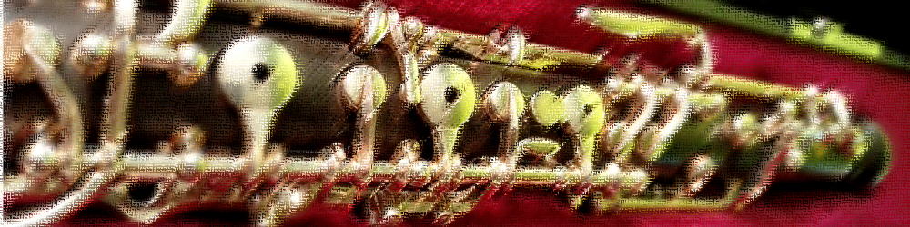
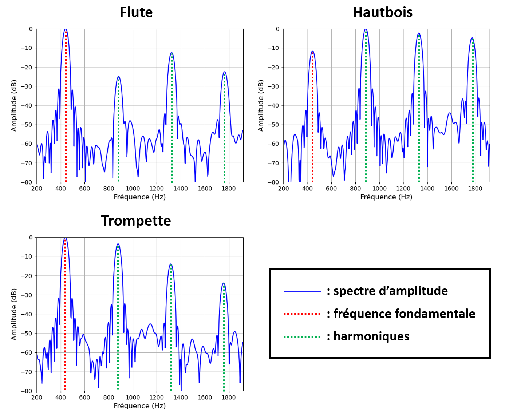
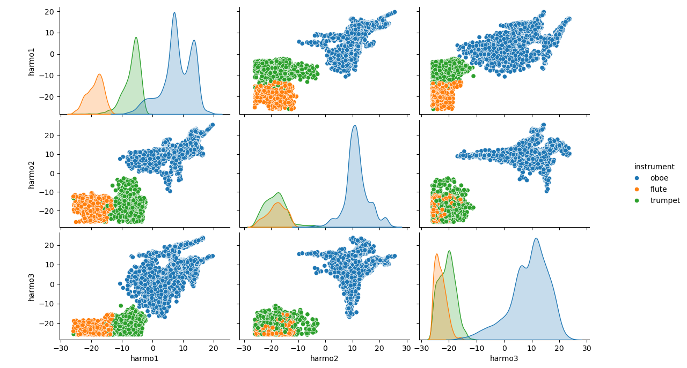
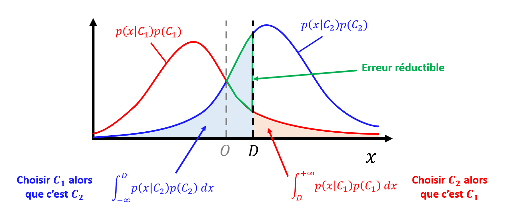
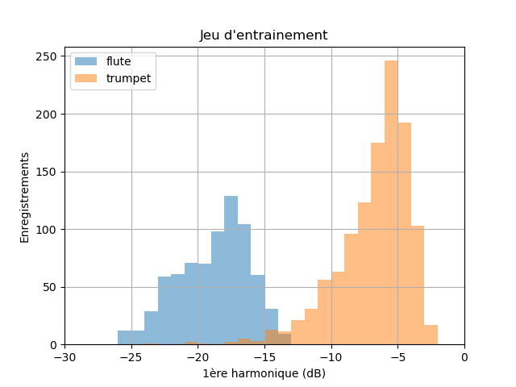
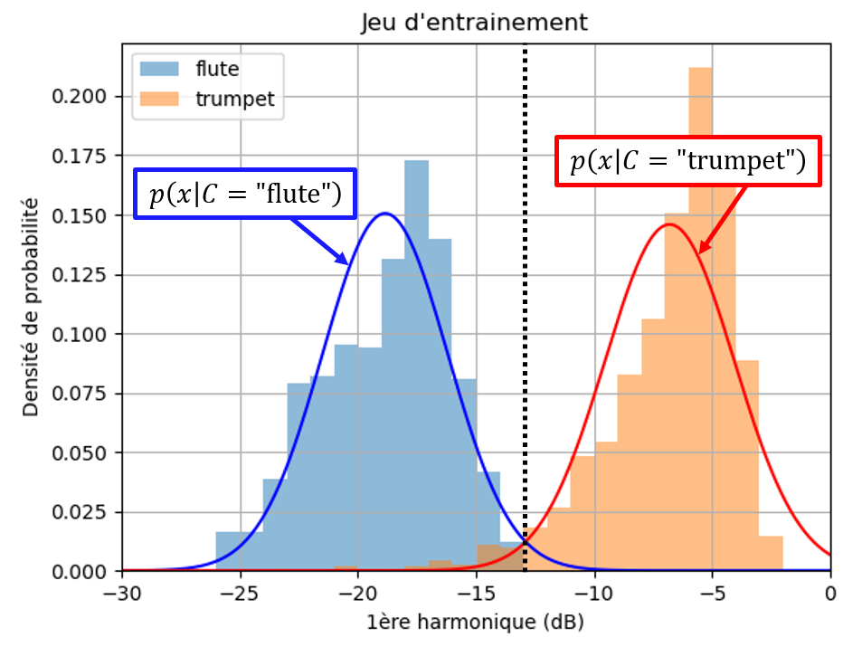
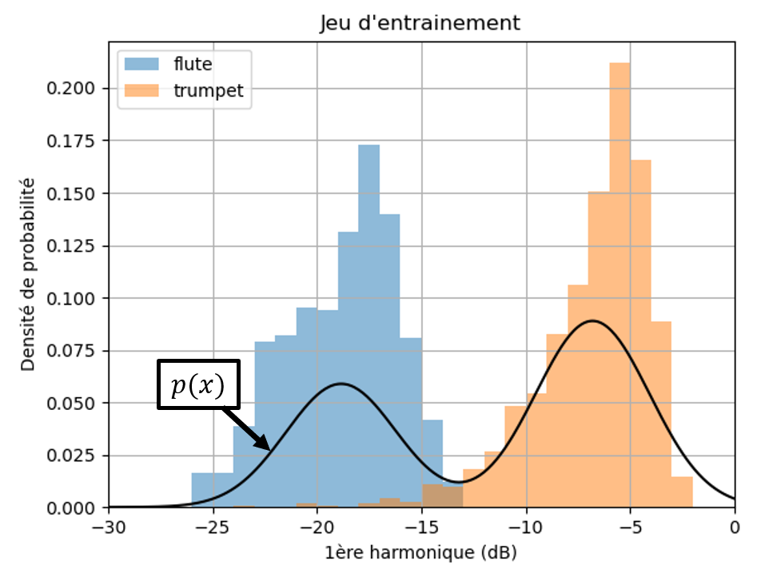
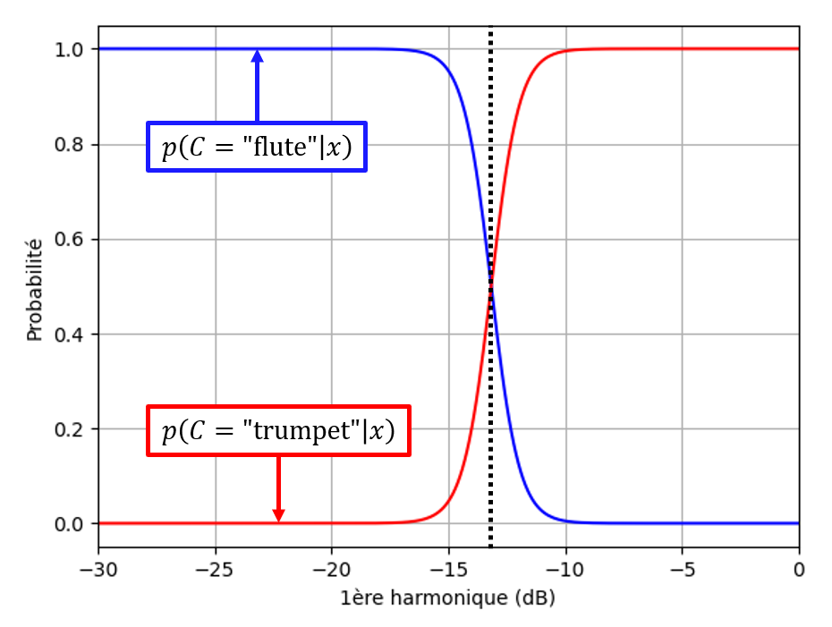
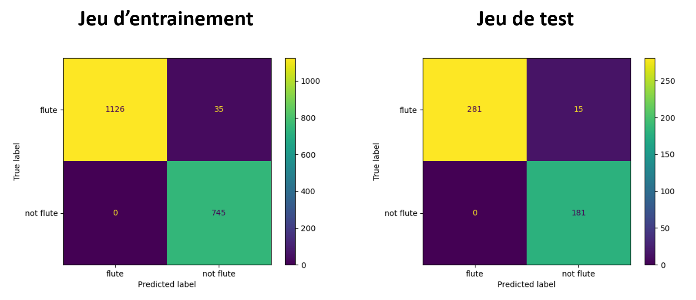

Chapitre II : Classification supervisée
Ce chapitre est une introduction à la classification supervisée : principe, mesures de performances et méthodes de base.

Problème de classification
Principe de la classification supervisée
Comme mentionné lors du Chapitre I, par "classifier" on entend associer une réalisation d'une variable quantitative discrète ou qualitative à un individu (labels), à partir des réalisations d'autres variables (features).
Les différents types de classification
Binaire
Multi-classes
Multi-étiquettes
Multi-sorties
Exemple de problème
Pourquoi est-on capables de reconnaitre le son d'un instrument de musique d'un autre ?
Lorsqu'un instrument joue une note, le son émit ne contient jamais qu'une seule fréquence. Il est en réalité constitué d'une "fréquence fondamentale" (la note que l'on veut jouer), et des "harmoniques" (des fréquences multiples de la fondamentale).
Pour une même note jouée, suivant l'instrument, les harmoniques n'auront pas la même amplitude comparée à la fondamentale. C'est ce que l'on appelle le "timbre" de l'instrument. Lorsque nous écoutons de la musique, et que nous reconnaissons le son d'un instrument, c'est grâce à son timbre.
Voici 3 exemples de spectres issus d'enregistrements d'une flute, d'un hautbois et d'une trompette jouant un La (440 Hz) :

On voit nettement la différence de timbre entre les 3 instruments.
D'où l'idée suivante : peut-on entrainer un modèle à reconnaitre un instrument à partir d'un enregistrement ?
Voici un jeu de données au format CSV, collectées à partir de milliers d'enregistrements d'une flute, d'un hautbois et d'une trompette jouant un La (440 Hz) : Chap2_instruments_dataset
Le tableau de données qu'il contient est de la forme suivante :
| instrument | harmo1 | harmo2 | harmo3 |
|---|---|---|---|
| oboe | 11.842 | 11.58 | 10.28 |
| flute | -17.083 | -17.384 | -21.496 |
| trumpet | -8.152 | -24.089 | -23.813 |
| oboe | 9.381 | 12.434 | 11.905 |
| oboe | -1.217 | 2.082 | 16.275 |
| trumpet | -3.294 | -13.812 | -17.934 |
| trumpet | -4.118 | -13.485 | -18.985 |
| ... | ... | ... | ... |
| trumpet | -7.762 | -5.934 | -23.308 |
| flute | -17.96 | -19.406 | -22.409 |
| oboe | 7.764 | 6.618 | 13.361 |
Il contient pour chacun des 5612 enregistrements le nom de l'instrument, et l'amplitude en dB des 3 premières harmoniques relativement à la fondamentale.
Notre problème de classification sera le suivant : prédire l'instrument ayant joué un La à partir des amplitudes des 3 premières harmoniques.
Voyons d'abord si une telle classification est possible à partir de ces données.
Une fois le fichier CSV téléchargé, il peut être importé sous Python en tant que DataFrame Pandas à partir de son chemin d'accès "input_path" :
df_dataset = pd.read_csv(input_path)
Il est possible avec Seaborn d'afficher ces données sous la forme d'une matrice de corrélations, avec chaque classe d'une couleur différente. Ce type de représentation permet de vérifier la séparabilité des différentes classes à partir des features sélectionnés.
Voici la commande Seaborn :
sns.pairplot(df_dataset,hue='instrument')
On obtient alors le graphique suivant :

On observe que les classes "flute", "oboe" et "trumpet" sont plutôt bien séparables à partir des amplitudes des 3 premières harmoniques. Vouloir entrainer un modèle à reconnaitre un de ces instruments à partir de ces données à donc du sens.
Il est à noter que nous avons ici grandement simplifié le problème et sa résolution pour les besoins de ce cours. Nous verrons cet exemple plus en détails en TP.
Mesures de performance
Matrice de confusion
Précision / rappel
Courbe ROC
Méthodes de base
Décision Bayesienne
La décision Bayesienne, aussi connue sous le nom de "classification Bayesienne naïve" est une méthode de classification se basant sur un modèle probabiliste des features, considérées indépendantes, et du théorème de Bayes.
Principe
Imaginons que nous avons un problème de classification avec \(q\) classes \(C_1\), \(C_2\), ..., \(C_q\). Nous voulons prédire la classe à laquelle appartient un individu.
La probabilité de chaque classe \(i\) notée \(p(C_i)\), aussi appelée "probabilité a priori".
On a \(\sum_{i=1}^{q} p(C_i) = 1\) et on peut facilement estimer les différents \(p(C_i)\) à partir du nombre d'occurences de \(C_i\) dans les données divisée par la taille de la base de données.
En ne connaissant que les probabilités a priori de chaque classe, nous serions obligés de classer n'importe quel individu comme appartenant à la classe \(C_i\) ayant le \(p(C_i)\) le plus élevé. Nous aurions alors un classifieur retournant toujours la même classe. Pas très utile...
Or, nous avons en réalité accès à plus d'informations : nos fameuses "features", dont nous voulons nous servir pour prédire la classe d'un individu.
Mettons que nous avons accès à une feature d'intérêt pour cette classification. On notera \(X\) l'espace des observations associé.
Pour déterminer la classe d'un individu, on peut alors partir du principe suivant : choisir le \(C_i\) tel que \(p(C_i \mid x)\) soit maximal. Nous expliquerons pourquoi dans la suite.
On nomme \(p(C_i \mid x)\) "probabilités a posteriori".
D'après le théorème de Bayes :
\(p(C_i \mid x) = \frac{p(x \mid C_i)p(C_i)}{p(x)}\)
avec \(p(x) = \sum_{i=1}^{q} p(x \mid C_i)p(C_i)\)
On nomme \(p(x)\) la densité de "probabilité d'observation", et \(p(x \mid C_i)\) la densité de "probabilité conditionnelle d'observation".
Toute la difficulté de la méthode est d'estimer \(p(x \mid C_i)\). On va en général chercher à modéliser ces densités de probabilité conditionnelle.

NB : Il est à noter que rechercher la classe \(C_i\) maximisant \(p(C_i \mid x)\) est équivalent à rechercher \(C_i\) maximisant \(p(x \mid C_i)p(C_i)\). Il n'est donc en théorie pas utile de calculer \(p(x)\) pour obtenir le classificateur. Mais il est nécessaire d'avoir \(p(x)\) pour obtenir des probabilités d'appartenance à une classe.
Attention ! En général, il y a des recouvrements entre les différentes densités de probabilité conditionnelle. On ne peut alors pas obtenir classifieur parfait. On cherchera juste le modèle permettant de minimiser les erreurs de classification.
Cas particulier : Si tous les \(p(x \mid C_i)\) sont égaux, alors la feature sélectionnée n'est pas pertinente pour la classification.
Ce principe est généralisable aux cas de classifications avec \(m\) features d'espaces de probabilité \(X_1\), \(X_2\), ... \(X_m\). On cherchera la classe \(C_i\) qui maximise \(p(C_i) \prod_{j=1}^{m}p(x_j \mid C_i)\).
Frontière de décision et erreur
Comme nous l'avons expliqué précédemment, sauf cas particulier, on ne peut pas obtenir un classifieur parfait.
On va donc essayer d'établir des frontières de décision entre les classes : des intervalles de \(x\) pour lesquels on attribura une classe. Et nous recherchons même les frontières de décision optimales : celles qui minimisent le risque d'erreurs.
Prenons un cas simple de classification binaire entre 2 classes \(C_1\) et \(C_2\). Nous noterons \(x = D\) la frontière de décision choisie.
On a alors 2 types d'erreurs de classification possibles :
-
Classifier l'individu en \(C_1\) alors qu'il appartient à \(C_2\).
-
Classifier l'individu en \(C_2\) alors qu'il appartient à \(C_1\).
Les probabilités d'erreurs associées sont \(\int_{-\infty}^{D} p(x \mid C_2)p(C_2) dx\) et \(\int_{D}^{+\infty} p(x \mid C_1)p(C_1) dx\).
Elles correspondent aux aires représentées sur ce schéma :

Pour obtenir la frontière de décision optimale \(x = O\), on va chercher à minimiser la somme de ces erreurs.
L'aire entourée en vert correspond à ce que l'on appelle "l'erreur réductible" : c'est la portion de l'erreur totale que l'on peut réduire pour obtenir la frontière optimale.
On retrouve bien que :
-
Si \(p(C_1 \mid x) > p(C_2 \mid x)\) alors on classifie l'individu comme appartenant à \(C_1\).
-
Si \(p(C_1 \mid x) < p(C_2 \mid x)\) alors on classifie l'individu comme appartenant à \(C_2\).
On peut généraliser à \(q\) classes : comme dit précédemment, pour obtenir les frontières de décision optimales, on choisi le \(C_i\) tel que \(p(C_i \mid x)\) soit maximal.
Choix du modèle
Comme nous l'avons expliqué, la décision Bayesienne nécessite un modèle des probabilités conditionnelles d'observation \(p(x \mid C_i)\) pour chaque classe \(C_i\).
Pour ce faire, on ajuste une fonction de densité de probabilité pour chaque \(p(C_i \mid x)\) à notre jeu d'entrainement.
Ceci implique donc 2 choix :
-
Une fonction de densité de probabilité, ce qui implique de faire une hypothèse forte sur la distribution des observations pour chaque classe.
-
Une méthode d'ajustement de loi de probabilité.
La fonction de densité de probabilité la plus classique est celle de la loi normale :
\(f(x) = \frac{1}{\sigma \sqrt{2 \pi}} e^{- \frac{1}{2} (\frac{x - \mu}{\sigma})^2}\)
avec 2 paramètres à ajuster \(\mu\) (la moyenne) et \(\sigma\) (l'écart-type).
La méthode d'ajustement la plus classique pour la décision Bayesienne est celle du maximum de vraisemblance. C'est elle que nous allons détailler.
Maximum de vraisemblance
| Définition |
|---|
| Soit une loi de probabilité \(f(x,\theta)\), définie par des paramètres \(\theta\). |
| Pour un échantillon observé \((x_1,x_2,...,x_n)\), on nomme vraisemblance ("likelihood" en anglais) la probabilité que cet échantillon provienne d'un tirage de \(f(x,\theta)\). |
| Si les tirages sont indépendants, on peut exprimer la vraisemblance de la manière suivantes : |
| \(L(x_1,x_2,...,x_n,\theta) = \prod_{k=1}^{n} f(x_k,\theta)\) |
La méthode du maximum de vraisemblance découle du fait que le modèle \(f\) de paramètres \(\theta\) représentant le mieux les observations est celui qui maximise la vraisemblance, c'est-à-dire la probabilité que l'échantillon provienne de cette loi.
L'idée est donc de rechercher les \(\theta\) maximisant \(L(x_1,x_2,...,x_n,\theta)\).
Souvent, pour simplifier les calculs, on ne va pas rechercher le maximum de la vraisemblance, mais de la log-vraisemblance :
\(logL(x_1,x_2,...,x_n,\theta) = \sum_{k=1}^{n} log(f(x_k,\theta))\)
En effet, rechercher les paramètres \(\theta\) maximisant \(L\) ou \(logL\) est équivalent, et rechercher un maximum implique un calcul de dérivée, ce qui est plus simple pour des sommes que pour des produits.
On va donc pour chaque paramètre \(\theta_j\) de \(\theta\) la valeur qui vérifie \(\frac{\partial}{\partial{\theta_j}} \sum_{k=1}^{n} log(f(x_k,\theta)) = 0\).
Prenons l'exemple de la loi normale :
\(f(x,\mu,\sigma) = \frac{1}{\sigma \sqrt{2 \pi}} e^{- \frac{1}{2} (\frac{x - \mu}{\sigma})^2}\)
On cherchera alors les paramètres \(\theta = (\mu,\sigma)\) vérifiant :
\(\frac{\partial}{\partial{\theta}} \sum_{k=1}^{n} (-log(\sigma) - log(\sqrt{2 \pi}) - \frac{1}{2} (\frac{x - \mu}{\sigma})^2) = 0\)
soit \(\frac{\partial}{\partial{\theta}} (- n log(\sigma) - n log(\sqrt{2 \pi} - \sum_{k=1}^{n} \frac{1}{2} (\frac{x - \mu}{\sigma})^2) = 0\)
soit pour chaque paramètre :
\(\frac{\partial}{\partial{\mu}} (- n log(\sigma) - n log(\sqrt{2 \pi}) - \sum_{k=1}^{n} \frac{1}{2} (\frac{x - \mu}{\sigma})^2) = 0\)
\(\frac{\partial}{\partial{\sigma}} (- n log(\sigma) - n log(\sqrt{2 \pi}) - \sum_{k=1}^{n} \frac{1}{2} (\frac{x - \mu}{\sigma})^2) = 0\)
On montre alors que les paramètres vérifiant ces équations sont :
\(\mu = \frac{1}{n} \sum_{k=1}^{n} x_k\) et \(\sigma^2 = \frac{1}{n} \sum_{k=1}^{n} (x_k - \mu)^2\)
Ce qui était attendu.
Implémentation Scipy
Afin de réaliser un ajustement de loi de probabilité, on peut utiliser la bibliothèque de calculs scientifiques Scipy, et en particulier son module de statistiques "scipy.stat".
Par exemple, pour un ajustement avec une loi normale, on pourra importer l'objet "norm" avec :
from scipy.stats import norm
On peut alors ajuster une loi normale à un ensemble d'observations contenu dans un conteneur x_obs, et récupérer la moyenne mu et l'écart-type sigma avec :
mu,sigma = norm.fit(x_obs)
Par défaut, la méthode du maximum de vraisemblance est utilisée.
Mais on peut également utiliser la "méthode des moments" (que nous ne présenterons pas dans ce cours), en ajoutant un paramètre method = 'MM' en entrée.
Une fois la loi normale ajustée, on a accès à la densité de probabilité dp associée à une réalisation x avec :
dp = norm.pdf(x,mu,sigma)
Bien d'autres lois de probabilité sont disponibles dans le module "scipy.stats", et fonctionnent sur le même principe que "norm".
Implémentation Scikit-Learn
Il est à noter qu'il existe aussi une implémentation de la classification Bayesienne dans Scikit-Learn, dans l'hypothèse de distributions des features suivant des lois normales.
Elle peut être importée avec :
from sklearn.naive_bayes import GaussianNB
On doit alors créer un objet "GaussianNB" qui contiendra notre modèle :
bayes_classifier = GaussianNB()
Il faut ensuite l'entrainer avec nos features et labels d'entrainement, nommés ici feature_train et label_train :
bayes_classifier.fit(feature_train,label_train)
Et enfin, on peut réaliser une prédiction à partir de features de test, nommés feature_test :
label_test = bayes_classifier.predict(feature_test)
Cette implémentation peut être pratique dans certains cas, mais elle ne permet pas de jouer sur les hyperparamètres suivants : la loi de probabilité et la méthode d'ajustement. Une optimisation de ces hyperparamètres n'est donc pas possible avec Scikit-Learn.
Application à notre exemple
Nous allons à présent appliquer la classification Bayesienne à notre problème exemple.
Afin de rendre la visualisation plus facile, nous allons simplifier le problème :
Mettons que nous voulons juste effectuer une classification binaire de nos enregistrements, entre les classes "flute" ou "trompette", en utilisant comme unique feature l'amplitude relative de la 1ère harmonique.
Pour ce faire, nous importons le fichier CSV sous la forme d'un DataFrame, et nous sélectionnons les variables et les individus qui nous intéressent :
df_dataset = pd.read_csv(input_path)
df_dataset = df_dataset[['instrument','harmo1']]
df_dataset = df_dataset[(df_dataset['instrument']=='flute')|(df_dataset['instrument']=='trumpet')]
Nous diviserons ici nos données en un jeu d'entrainement (80%) et un jeu de test (20%), sous la forme de 2 DataFrames :
df_train=df_dataset.sample(frac=0.8,random_state=0)
df_test=df_dataset.drop(df_train.index)
On peut alors tracer un histogramme de notre feature pour les données d'entrainement, en sépararant les 2 classes :

On peut noter qu'il y a peu de recouvrement entre les 2 distributions, ce qui laisse entrevoir qu'il est possible d'entrainer un modèle à classifier ces données.
En 1ère approche, nous choisissons d'ajuster à ces 2 distributions des modèles de lois normales. Il faudra se poser la question de la pertinence de ce choix.
Tout d'abord, nous allons séparer le jeu d'entrainement en 2 Series (DataFrame Pandas ne contenant qu'une colonnes) suivant si l'instrument est une flute ou une trompette :
sr_harmo1_flute_train = df_train[df_train['instrument']=='flute']['harmo1']
sr_harmo1_trumpet_train = df_train[df_train['instrument']=='trumpet']['harmo1']
On peut alors réaliser nos 2 ajustements, et récupérer les paramètres \(mu\) et \(\sigma\) correspondants :
from scipy.stats import norm
mu_harmo1_flute,sig_harmo1_flute = norm.fit(sr_harmo1_flute_train)
mu_harmo1_trumpet,sig_harmo1_trumpet = norm.fit(sr_harmo1_trumpet_train)
Maintenant que nous avons les paramètres de nos modèles, nous pouvons évaluer la densité des probabilités conditionnelles pour la classe "flute" et la classe "trompette".
Voici par exemple 301 évaluations pour des valeurs d'amplitude de la 1ère harmonique entre -30 et 0 dB :
x_axis = np.linspace(-30,0,301)
proba_norm_flute = norm.pdf(x_axis,mean_harmo1_flute,sig_harmo1_flute)
proba_norm_trumpet = norm.pdf(x_axis,mean_harmo1_trumpet,sig_harmo1_trumpet)
Nous pouvons alors tracer les courbes correspondantes par-dessus notre histogramme (affiché en densité de probabilité) :

Si nos modèles ne paraissent pas complément inadaptés, on peut noter qu'ils ne capturent pas la légère asymétrie de nos distributions. On pourrait donc se poser la question d'essayer d'autres lois de probabilités, asymétriques.
Continuons avec nos modèles pour les probabilités conditionnelles.
La prochaine étape est d'estimer la probabilité de chaque classe, à partir de leurs densités relatives :
proba_flute = len(sr_harmo1_flute_train)/len(df_train)
proba_trumpet = len(sr_harmo1_trumpet_train)/len(df_train)
On peut alors utiliser estimer la densité de probabilité d'observation :
proba_obs = proba_norm_flute*proba_flute + proba_norm_trumpet*proba_trumpet
Si nous l'affichons avec les histogrammes, nous pouvons vérifier qu'elle est bien cohérente avec la distribution des observations.

Enfin, nous pouvons calculer les probabilités a posteriori, en se basant sur la formule de Bayes :
proba_bayes_flute = proba_norm_flute*proba_flute/proba_obs
proba_bayes_trumpet = proba_norm_trumpet*proba_trumpet/proba_obs
On peut alors afficher ces probabilités, et tracer la frontière de décision :

La frontière de décision se trouve à environ -13.16 dB :
-
Si on mesure une 1ère harmonique ayant une amplitude inférieure, on classifiera l'instrument comme étant une flute.
-
Si on mesure une 1ère harmonique ayant une amplitude supérieure, on classifiera l'instrument comme étant une trompette.
Comme nous l'avons mentionné précédemment, si la probabilité d'appartenance aux classes ne nous intéresse pas, nous pourrions juste comparer \(p(x \mid C = 'flute')p(C='flute')\) et \(p(x \mid C = 'trumpet')p(C='trumpet')\) pour classifier les observations.
Maintenant que nous avons vu le principe, on voudrait pouvoir ré-entrainer notre modèle afin d'optimiser les hyperparamètres, et réaliser des prédictions sur les jeux d'entrainement et de test, le tout de manière efficace.
Dans ce but, nous pouvons mettre notre classification binaire Bayesienne sous la forme d'une classe binary_bayes avec 2 méthodes train et predict pour l'entrainement et la prédiction.
Voici un exemple d'implémentation :
class binary_bayes:
def __init__(self,stat_model):
self.stat_model = stat_model
self.true_params = None
self.false_params = None
self.proba_true = None
def train(self,x_true,x_false):
self.true_params = self.stat_model.fit(x_true)
self.false_params = self.stat_model.fit(x_false)
len_true = len(x_true)
len_false = len(x_false)
self.proba_true = len_true/(len_true+len_false)
def predict(self,x):
proba_norm_true = self.stat_model.pdf(x,*self.true_params)
proba_norm_false = self.stat_model.pdf(x,*self.false_params)
proba_obs = proba_norm_true*self.proba_true + proba_norm_false*(1-self.proba_true)
proba_bayes_true = proba_norm_true*self.proba_true/proba_obs
return proba_bayes_true
On peut alors facilement définir un classificateur binaire "est-ce une flute ?" utilisant la loi normale telle qu'implémentée par Scipy :
from scipy.stats import norm
is_a_flute = binary_bayes(norm)
Entrainer ce classifieur sur notre jeu d'entrainement :
is_a_flute.train(sr_harmo1_flute_train,sr_harmo1_trumpet_train)
Et réaliser des prédictions sur nos données d'entrainement et de test :
prediction_train = (is_a_flute.predict(df_train['harmo1']))
prediction_test = (is_a_flute.predict(df_test['harmo1']))
En partant du principe que nous positionnons la frontière de décision à une probabilité d'appartenance à classe "flute" de 0.5, nous pouvons obtenir les matrices de confusion en entrainement et en test avec les commandes suivantes :
from sklearn.metrics import confusion_matrix
#Label encoding:
ground_truth_train = (df_train['instrument']=='flute').astype(int)
ground_truth_test = (df_test['instrument']=='flute').astype(int)
cm_train = confusion_matrix(ground_truth_train, prediction_train>0.5)
cm_test = confusion_matrix(ground_truth_test, prediction_test>0.5)
Voici les résultats en entrainement obtenus pour notre exemple :

On observe que les performances du modèle sont très similaires entre les données d'entrainement et de test. Ceci tend à montrer que l'on a pas de problème de sur-ajustement important, ce qui laisse présager des performances similaires en généralisation.
Il n'y a aucun faux positif, mais on a quelques faux négatifs : parfois notre modèle classifie des enregistrements de flutes comme n'étant pas des flutes.
Suivant les applications, on peut vouloir choisir une frontière de décision différente, pour diminuer le nombre de faux négatifs, au prix d'une augmentation du nombre de faux positifs. Afin de voir les effets d'un tel choix, on tracer une courbe ROC à partir des probabilités prédites par notre modèle :
fp_rate_train, tp_rate_train, thresholds_train = roc_curve(ground_truth_train, prediction_train)
fp_rate_test, tp_rate_test, thresholds_test = roc_curve(ground_truth_test, prediction_test)
Remarques
La méthode de la classification de Bayes a les avantages suivants :
-
Elle fonctionne pour tous les types de classification et variables.
-
Elle est relativement simple à mettre en place, avec peu de paramètres.
-
Les décisions qu'elle prend sont complément expliquées et interprétables : un humain peut les comprendre.
Mais cette méthode a aussi les limites suivantes :
-
Elle fait l'hypothèse de l'indépendance des variables entre elles, ce qui dans la pratique limite son application aux problèmes avec peu de features.
-
Elle fait une hypothèse forte sur la distribution des observations pour chaque variable. Il s'agit souvent d'une hypothèse de normalité.
K Plus Proches Voisins
Principe
La méthode de la classification Bayesienne que nous venons de voir avait pour désavantage de nécessiter une hypothèse sur la distribution des observations.
Dans cette section, nous allons présenter une méthode ne nécessitant aucun a priori sur les données : les K Plus Proches Voisin, aussi connue sous l'acronyme KPPV.
Les KPPV est une méthode dite de "lazy learning" : il n'y a pas de réel apprentissage préalable à la prédiction. Le jeu de données d'apprentissage est stocké en mémoire, et utilisé au moment de la prédiction.
L'idée est la suivante : pour classer un nouvel individu, on va calculer sa distance aux \(k\) individus les plus proches dans les données d'entrainement. On attibura alors à l'individu la classe la plus représentée parmi ses \(k\) "plus proches voisins".
Prédire la classe d'un individu avec cette méthode implique :
(1) De mesurer la distance entre l'individu à classifier et tous les individus du jeu d'entrainement. C'est ce que l'on appelle "l'approche brute". Et plus le jeu d'entrainement est grand, plus le temps de calcul sera long. Pour cette raison, on choisi de stocker le jeu d'entrainement dans une structure de donnée la plus efficace à parcourir possible (exemple : KD-Tree).
(2) De choisir une mesure de distance adaptée au problème.
(3) De choisir le nombre de "plus proches voisins" à l'individu à considérer.
(4) De choisir de quelle manière on va affecter une classe à l'individu à partir de la classe de ses voisins : Un vote majoritaire ? S'il y a un gros déséquilibre entre classes, ce type de vote risque d'être biaisé. On préférera alors un vote avec des poids différents suivant les classes.